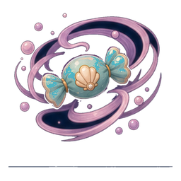
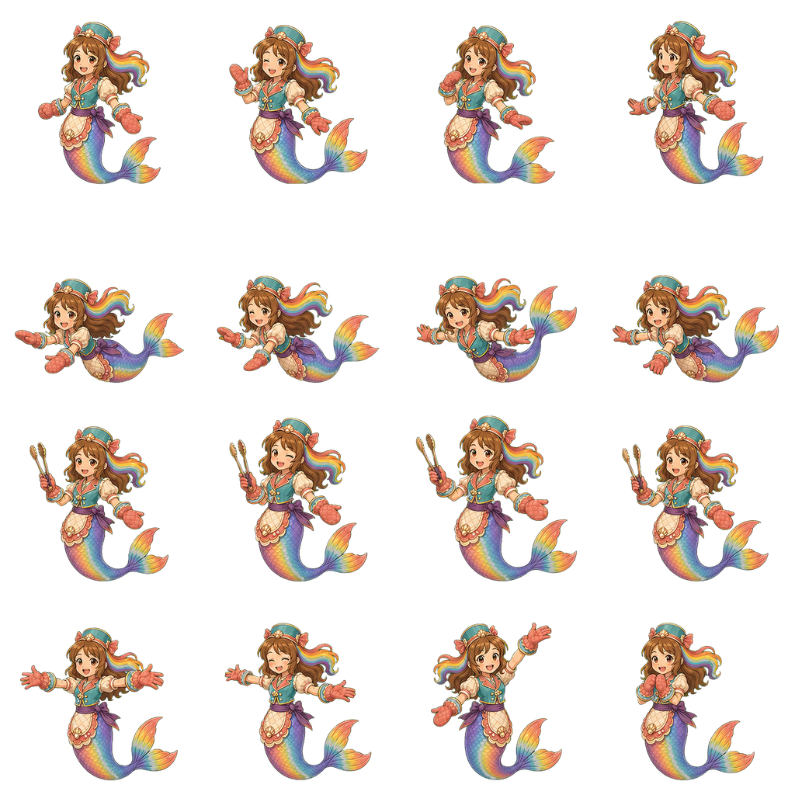

Early release source: 4.5/5 provisional. Opposite wrist midpoint: best 4.2/5, still rejected. Every one of eight complete native drafts has eleven individual source opinions. Six neighboring still relationships are separately reviewed. These 94 opinions do not approve an animation or the current game.
The fourth release drawing keeps each thumb connected to its mitten and sleeve, leaves purple space between hands and paper, and restores short flat paper creases. The midpoint attempts still jump toward completed winds or fail to show a clear opposite wrist pair. All seven failed drafts remain visible below.
What still has to match in the game
Current story-job and Opera-training WRAP remains 2.8/5. The actual widget is the turquoise shell-badged sweet with decorative spiral; the current valid actor atlas uses four work poses holding a whisk away from the sweet. Neither binds the gold paper or these contact hands. The portrait fallback is not evidence that the displayed atlas performs wrapping.

Actual wrapper widget: decorative already-wrapped state.

Actual actor atlas: work is row three, four whisk poses.
Fold → cover → gather → opposite midturn → finish twist → early release → quiet rest. The middle key below is rejected and shown to expose the gap. These sources are not a playable clip; the six table rows assess static relationships, with temporal scores unassigned.
Existing partial-fold and cover stills show the same supported sweet disappearing under the gold sheet. They do not supply the intervening fold/press motion.
cover to neck grip
4.4
Covered oval and wide attached fans continue into two neck grips. Gathering trajectory and hand contact onset remain unproved.
neck grip to midturn candidate
3.7
The fourth candidate jumps to near-finished neck winds and endpoint-like hands; a readable halfway opposed roll is still missing.
midturn candidate to finished twist
3.6
Candidate and finished endpoint have too little meaningful wrist/paper progression to explain torque. Do not promote the rejected middle key.
finished twist to early release
4.4
Two complete mittens disengage above the supported paper in the new source; flattened neck fold profiles differ slightly from the twist endpoint. Thumb ownership improves, but the temporal withdrawal is not established.
early release to final rest
4.4
Low close hands widen to the earlier hands-clear rest while the opaque oval and wide fans broadly remain supported. Source still comparison does not prove the path or settle timing.
release attempt 04 — 4.5/5
Provisional early-release source floor achieved. This one still does not prove withdrawal motion, complete wrapping or current-game/training fit.
Hands mostly clear paper, with close right-fan/mitten contour.
early release stage
3.5
Both hands change to wide final rest, although the edit explicitly required preserving early close positions.
neck material
4.4
Reduced neck coils read flatter than A2, but several curved bands remain.
fan conservation
4.3
Fan silhouettes remain broadly the same family, not literal fixed shapes.
covered table supported oval
4.5
Single oval stays on the table.
cuff and thumb ownership
4.6
Cuffs and glove connections intact.
identity
4.5
Main identity stays recognizable.
painted room
4.4
Context provisional.
whole source for early release
4.2
Rejected as early release: improved neck material, but the second reference shifts both hands to the final wide still.
Review and remaining work
Built-in ImageGen edited complete flattened source scenes. Every native 1672×941 image is preserved without pixel repair, cropping, compositing, blending or interpolation. Exact prompts, source hashes and rejected attempts are retained. The new still reaches the source floor only; it remains an inclusive ≤4.5 priority.
Previous developed local motion remains rejected: twist 2.2/5 and release 1.7/5. No new motion was dispatched here. Full wrapper workflow, actual story job and Opera training, all other weak job objects and 294 pending primary source opinions, ordinary routes, device, child, owner and comprehensive report approval remain open.